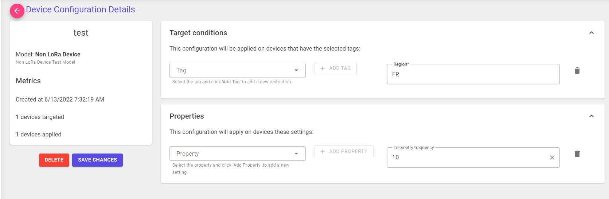
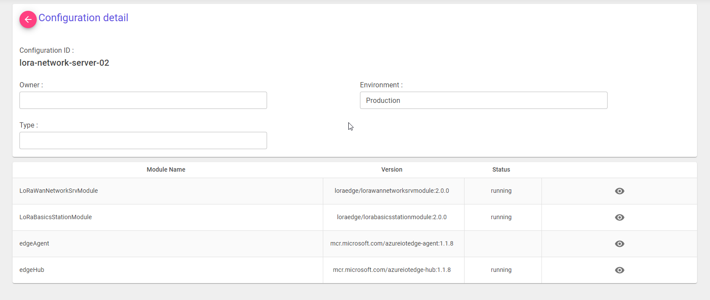
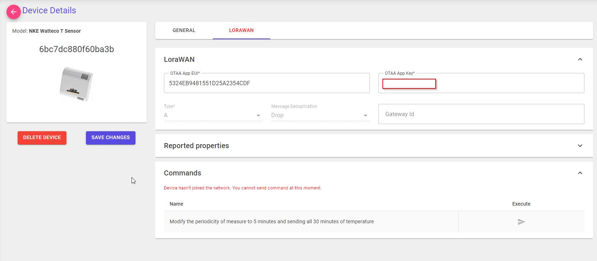
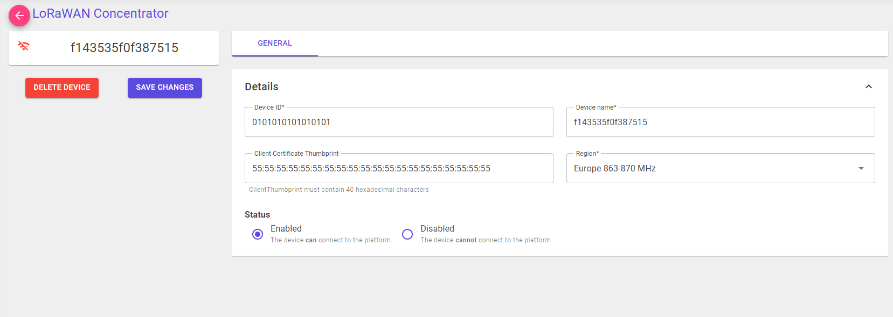

Core Concepts¶
The Azure IoT Hub portal inherits from Azure IoT Hub concepts to manage IoT devices.
It relies on the following concepts:
- IoT Device Provisioning
- IoT Hub Device Twin
- IoT Hub Device Twin properties
- IoT Hub Edge deployment manifest
- Cloud To Device Message
Device models¶
By using this capability, the application can create logical representations of IoT devices. This feature is designed to configure a set of sharable properties between devices. When creating a device, the user is asked to specify the device model. The application will then apply the properties of the device model to the device.

Parameters¶
Device Model Id: The ID of the device model. > Note: Since the device model is shared among all the devices, theID should be unique. For convenience, the ID is generated by the application. By using the API, the ID is not required, but if provided, it will be used as the ID of the device model.Name: The name of the device model.Description: The description of the device model.
Built-in models¶
Built-in models are predefined device models that can be used by the application. This functionality is exactly the same as standard device models except that the properties are not editable and the device model is not removable via the Portal.
Note: Creating and updating built-in models is not available in the portal. They can be managed using the Azure IoT Hub portal APIs.
See Device Model API reference for more information.
Devices¶
Devices are the physical IoT devices that are provisioned by the application. They are represented by an object that is stored in the Azure IoT Hub as the device twin.

Device Parameters¶
Device Id: The ID of the device. > Note: It is the device id stored in the Azure IoT Hub. It is asked to the user when creating a device and is not editable after the device is created.Name: The name of the device model. > Note: The device name is the device friendly name. The name is editable after the device is created.Device Model: The device model that the device is based on. > Note: The device model is asked to the user during the device creation and is not editable after the device is created.Status: The status of the device. > Note: The status is related to the Device status in the Azure IoT Hub.Tags: The tags of the device. > Note: The tags are related to the Device tags in the Azure IoT Hub. They could be defined at the portal level and set to the device for filtering and targeting for configuration.
Device Twin tags¶
To store additional information about the device, the application uses device twin tags.
| Name | Position | Description |
|---|---|---|
| deviceName | tags.deviceName |
Field that contains the device friendly name. note: if not set, the portal will show the device id instead of the device name until it's configured. |
| modelId | tags.modelId |
Field that contains the device model identifier that the device is related. note: if not set, the device is not usable on the IoT hub portal. |
| supportLoRaFeatures | tags.supportLoRaFeatures |
Field that specifies if the device must support LoRa features. note: if not set, LoRa features will be available on the device. |
IoT Edge¶
IoT Edge is fully herited from Azure IoT Hub concepts. In the portal, the user can mangage the IoT Edge devices stored in Azure IoT Hub. For more information about Azure IoT Edge, see Azure IoT Edge documentation.

IoT Edge Parameters¶
Type: The type of the IoT Edge device. > Note: related to the IoT Edge purpose tag value that might be used to create deployment manifests.Environment: The IoT Edge device environment (Development, Production, QA). > Note: this is an additional field that can be used to create deployment manifests.Status: The status of the device. > Note: The status is related to the Device status in the Azure IoT Hub.Nbr of connected devices: The number of devices connected to the IoT Edge device. > Note: The number of connected devices is related to the number of connections that are currently present in the edgeHub module. This might be different from the number of devices connected to the IoT Edge device if some modules are using edgeHub connections.Nbr of desired modules: The number of modules that are desired in the last deployment.
Last deployment¶
The last deployment section shows information about the deployment manifest that is currently applied to the IoT Edge device.
IoT Edge Module¶
The IoT Edge module section represents the modules that are currently deployed on the IoT Edge device. It doesn't include the system modules of IoT Edge (edgeAgent and edgeHub). With the portal, the user can interact with these modules and manage them (Get last module logs, restart module, etc.).
IoT Edge Device Twin tags¶
To store additional information about the device, the application uses device twin tags.
| Name | Position | Description |
|---|---|---|
| Environment | tags.env |
Field that contains the Device Environment value. note: this tag may be used to target deployment manifests for the IoT Edge |
| Type | tags.type |
Field that contains The type of the IoT Edge device. note: this tag may be used to target deployment manifests for the IoT Edge |
DPS Enrollment groups¶
The IoT Hub portal relies on Azure Device Provisioning Enrollement groups to manage IoT Edge device connection strings. When clicking on "Connect" in the IoT Edge details page, the user can access the device unique credentials in the enrollment group.
Note: see Provision the device with its cloud identity to know how to configure the IoT Edge to use these credentials to connect to the platform.
Device Configuration¶
By using the portal, users can manage the device configuration and deploy to devices that are targeted by the configuration.

It relies on the Device Model to define the configuration parameters that can be deployed to the devices.
Device Configuration template¶
Under the cover, the configuration is stored in the Azure IoT Hub as the twin configuration.
Please note that the created-by label is used to identify the configuration created by the IoT Hub portal.
IoT Edge Configuration¶
The IoT Edge configuration concerns the IoT Edge deployment manifests that are currently present in the IoT Hub. The portal can be used to see the details of the configurations.
Note: At this time the portal cannot be used to update the configurations.

Target¶
The parameters are related to the IoT Edge deployment manifest target condition field. The IoT Hub portal will use the Target condition to extract this values from the deployment manifest.
| Name | Position | Description |
|---|---|---|
| Owner | tags.owner |
Owner tag filter condition from the Deployment Manifest. |
| Environment | tags.env |
Environment tag filter from the Deployment Manifest. |
| Type | tags.type |
Device type tag filter from the Deployment Manifest. Expected value for IoT Edge LoRaWAN LNS is LoRa Network Server, otherwise the value must be Other |
Enrollment groups¶
The IoT Hub portal relies on Azure Device Provisioning Enrollment groups to manage IoT device connection credentials.
For each device model, the portal will create a new enrollment group with symmetric key attestation. By clicking on "Connect" in the device details page, the portal will show unique credentials to the device for the corresponding enrollment group.
Furthermore, the enrollment group is configured to provide initial device twin state:
For more information, see Azure Device Provisioning Enrollement groups.
LoRaWAN¶
LoRaWAN features are activated by default, providing a way to configure IoT Devices that supports LoRaWAN connectivity in the Portal. Internally, the LoRaWAN connectivity is expected to be provided by IoTEdge LoRaWAN StarterKit. The IoT Hub portal will manage devices by modifying their twin properties to make them working with this solution.
Note: to disable LoRa Features, change the value of
LoRaFeature__Enabledto false in the Portal App Settings.
LoRaWAN Device Models¶
For regular Device Models the IoT hub portal provides the possibility to manage LoRaWAN device models.
To activate the LoRaWAN features on the device model, the user have to enable the option in the LoRa Device section

Note: once activated, the device model detail adds a new tab called "LORAWAN" that adds new settings to the device model.

LoRaWAN Device Model Parameters¶
The parameters for the device models are parameters that are stored in the IoT Hub portal and retrieved for devices that inherits from this device model.
Note: When changing the value of a parameter, the device will be updated with the new value. In that case, user should then modify each device and re-save it to get the correct properties.
Support OTAA/ABP setting: The device model supports OTAA/ABP connectivity.Type: The LoRaWAN device class type (A or C).Message Deduplication: Allows controlling the handling of duplicate messages received by multiple gateways.The default is Drop.OTAA AppEUI: The device model OTAA App EUI used for the device during the OTAA Join procedure.Sensor Decoder URL: The Sensor Decoder URL that the network server should use to decode frames comming from the devices that inherit from this model.Device Connection Timeout: Allows defining a sliding expiration to the connection between the leaf device and IoT/Edge Hub. The default is none, which causes the connection to not be dropped.Support downstream messages: Allows controlling the support of downstream messages. The default is false.Preferred receive window: Allows setting the device preferred receive window (RX1 or RX2). The default preferred receive window is 1RX Delay: Allows setting a custom wait time between receiving and transmission as specified in the specification.RX1 Data offset: Allows setting a custom data offset for the RX1 receive window. The default is 0.RX2 Data rate: Allows setting a custom data rate for the RX2 receive window. The default is 0.32bit counter support: Allow the usage of 32bit counters on your device.Frame counter up start value: Allows setting the frame counter start value for upstream messages. The default is 0.Frame counter down start value: Allows setting the frame counter start value for downstream messages. The default is 0.Frame counter reset value: Allows to reset the frame counters to the FCntUpStart/FCntDownStart values respectively.
Note: for more information about LoRaWAN properties, please refer to the LoRaWAN StarterKit Documentation
Commands¶
The devices commands are pre-stored frames that the user can add to the device model and then will be able to use on the device detail page to launch to the device.
Name: The command name. This name is only a friendly name that the user can set to understand what the command is supposed to do.Frame: The LoRaWAN frame (in hex) to be sent to the device.
LoRaWAN Devices¶
LoRaWAN devices are accessible from the IoT Hub portal for devices that inherits from the LoRaWAN device model. The LoRaWAN tab shows the device details.

Note: By selecting the correct device model on the first tab, the portal will automatically take LoRaWAN settings from the device model to apply on the device.
Concentrators¶

Concentrator Parameters¶
Device ID: The Station EUI for the LoRaWan Basic station.Device Name: The friendly name for the device.Client Certificate Thumbprint: The client certificate thumbprint used by the Basic Station to authenticate to the LoRaWAN Network Server.Region: The LoRaWAN region used by the Basic Station (EU868, US915, AS923 and CN470 supported).
Concentrator Tags¶
To store additional information about the concentrator, the application will use the target device to extract values:
| Name | Position | Description |
|---|---|---|
| Device Name | tags.deviceName |
Field that contains the Device name. |
| Region | tags.loraRegion |
Field that contains the Device region. |
| deviceType | tags.deviceType |
Field that contains The type of device. Expected value is LoRa Concentrator |
Command Execution¶
To execute the command, the device should have joined the network. The message below explains that the device have to be connected to the network ant commands are disabled until the device is connected to the network.

Command execution flow¶
The schema below explain how the command execution flow works.
See https://azure.github.io/iotedge-lorawan-starterkit/2.0.0/quickstart/#cloud-to-device-message for more information about the Cloud To Device Message involed in the LoRa WAN device commands execution flow.
Automatic device configuration for LoRa WAN¶
When modifying the device model, the IoT Hub portal will automatically create a new Device Configuration that will target the IoT devices that have the corresponding modelId tag.
The IoT Hub portal will create a new Rollout deployment that will remove older configuration and add the new configuration.
This process ensure that the devices twin will be updated at scale by the IoT hub and each devices that inherit for the model will be updated according the model configuration.
The configuration will be created with the following schema:
Please note that the created-by label is used to identify the configuration created by the IoT Hub portal.
For more information see Automatic IoT device and module management.